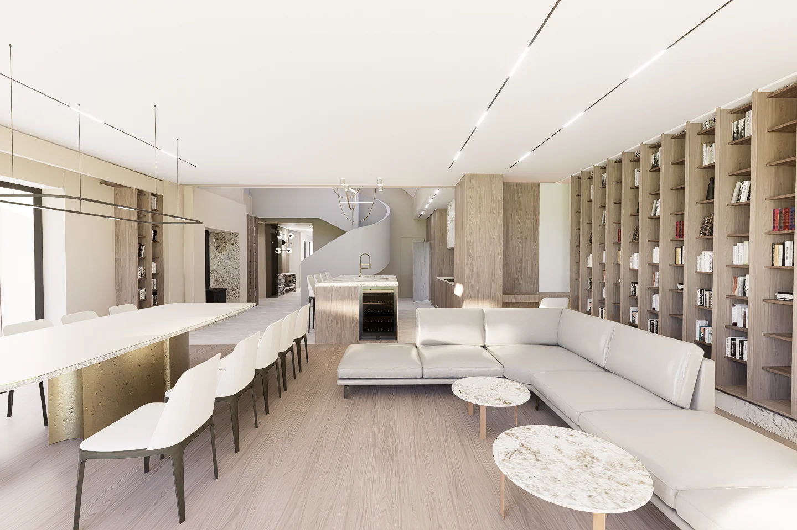
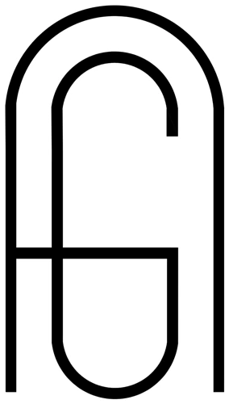
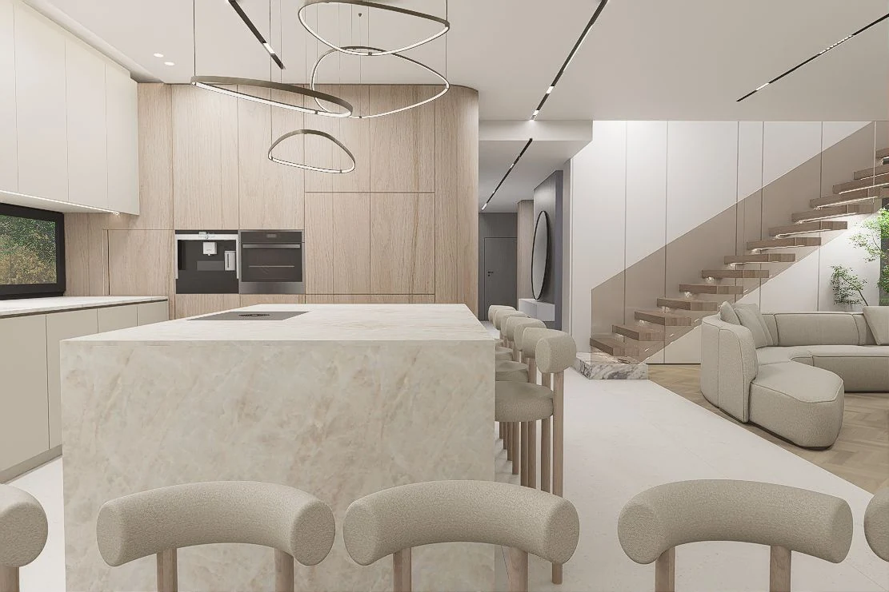
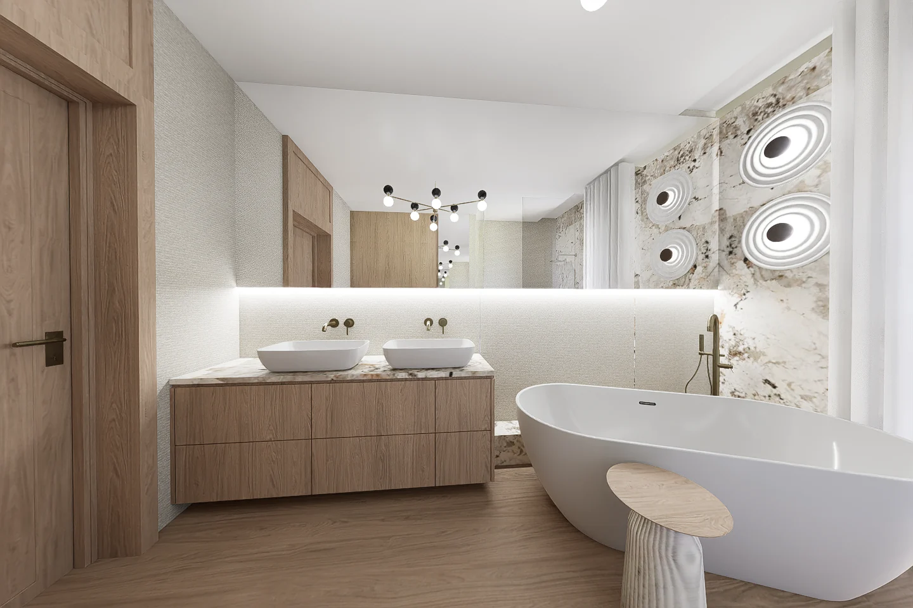
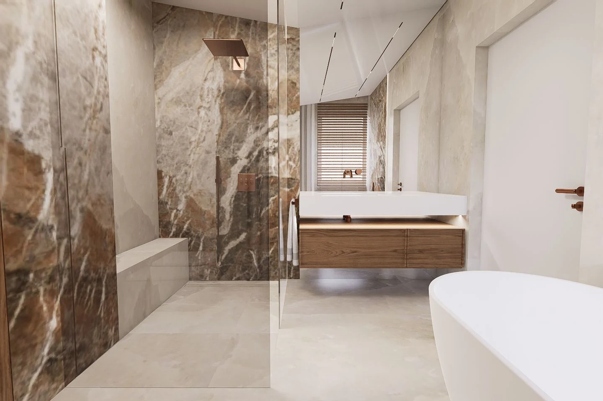
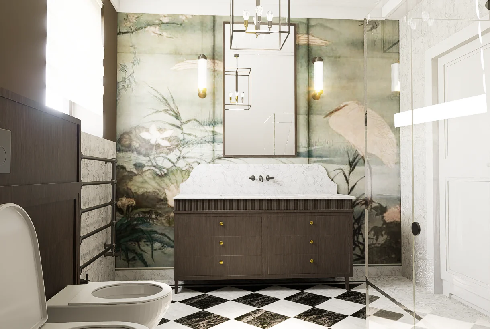
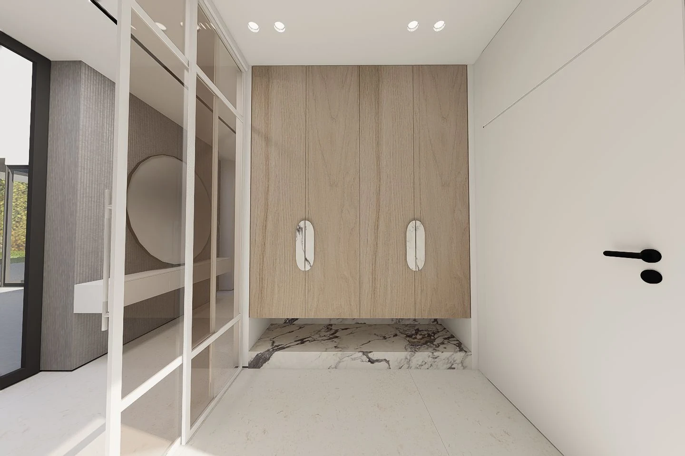
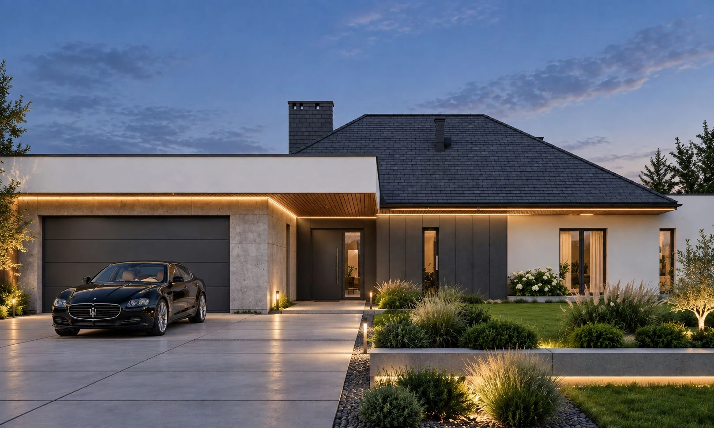
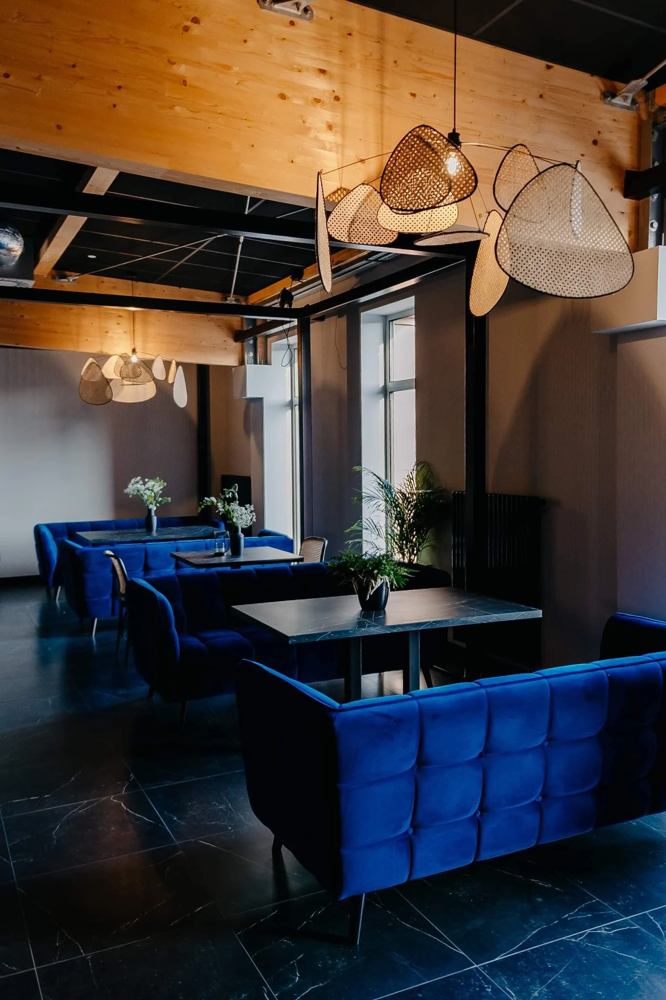
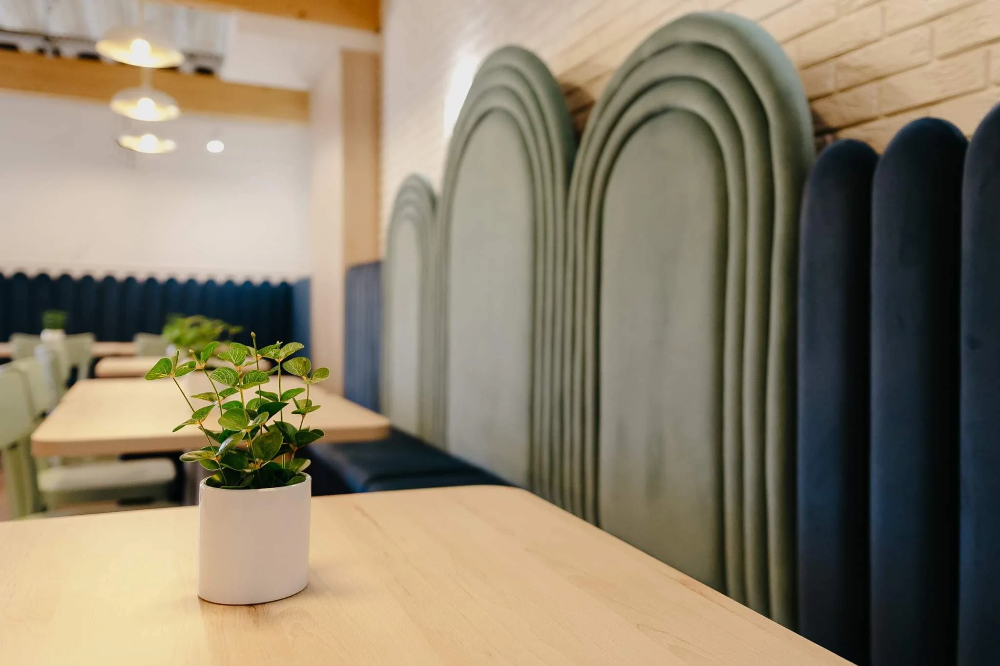

Agnieszka Gawlik
Agnieszka Gawlik · Interior Design

Studio · Częstochowa
Wnętrza tworzone z wyczuciem proporcji, materiału i detalu.
Od 15 lat projektuję wnętrza indywidualne i komercyjne. Tworzę spójne, funkcjonalne przestrzenie, w których architektura, światło i materiały budują ponadczasową całość.








Kontakt
Porozmawiajmy
o wnętrzu.
Agnieszka Gawlik
Projektowanie wnętrz
Częstochowa i okolice
Częstochowa i okolice
Pracownia
Kłobuck · ul. gen. W. Andersa 29
Częstochowa · ul. Dąbrowskiego 13/12
Częstochowa · ul. Dąbrowskiego 13/12